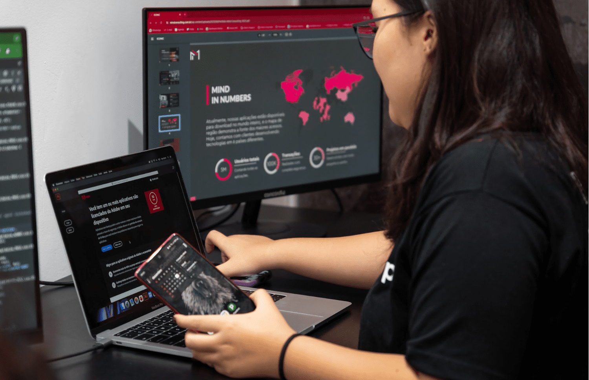

Um dia desses, dentro de um livro da biblioteca da escola, eu descobri uma carta antiga sobre uma cidade perdida, escondida por riquezas e belezas naturais. Nessa carta, a autora deixa algumas pistas para encontrar essa cidade e eu decidi segui-las!
ela vai pesquisar como faz o aplicativo
Ana é uma jovem profissional que está sempre em movimento. Ela usa um aplicativo de compras para encontrar roupas e acessórios que combinem com seu estilo moderno e ativo. O aplicativo oferece recomendações personalizadas baseadas nas suas preferências e histórico de compras.Projetar uma experiência de usuário que torne a navegação pelo aplicativo intuitiva e as compras mais fáceis e agradáveis para Ana
ela vai comçar a fazerAna descediu entao testa seu novo aplicativo
ela vai compra um item do seu aplicativo